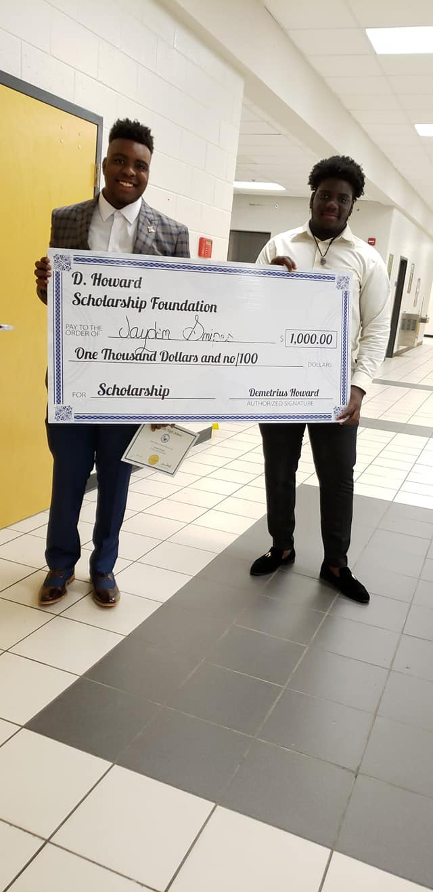

At the age of three months, I lost my father to the ongoing epidemic of gun violence.
This single act changed my life forever, making me fatherless and my mother
a single parent. Both my mother and I wanted a life with change and prosperity.
One of the best said ways to prosper is through education. With a dedication towards something better,
I worked hard in school and out, allowing me to make honor roll yearly! My efforts
afforded me a full ride to the college of my choice. It was not until my Freshman year in
college that I realized exactly how fortunate I had been. It was at this point that I decided
to give back to someone (through the D. Howard Scholarship Foundation) who was also hard-working,
devoted to education, but a little less fortunate.
ABOUT THE D. HOWARD SCHOLARSHIP FOUNDATION
The D.Howard Scholarship Foundation works to help those beating the stereotypical
image of the minority community. The D. Howard Scholarship provides an upcoming college
freshman student with a financial accompaniment. The award is given to a student with good
character, who has lost a father due to gun violence. The student must be dedicated to
furthering their education and changing the stereotypical of the minority community, especially
as it pertains to those who are left fatherless. The D.Howard Scholarship team members pride ourselves
in helping young black men stay out of trouble and into education, as “knowledge is power.”
Recipient Check In
Jonathan Williams
Jayden Snipes
Jayden Snipes lost his father to a horrible act of gun violence at just 2 months of age, leaving only his mother to care for he and his siblings.
Jayden did exceptionally well throughout his high and junior high school years allowing him to take advance classes and make honor roll quarterly.
After high school he went on to the University of West Georgia with plans to major in Psychology. Though focused on school, Jayden is ultimately a "family man."
He stated, " I want to be in a position so that I can one day take care of my mom because she went above and beyond
for us. I don’t want to have to burden her with College expenses if I can help it." Unforunately, Jayden's mother passed away on September 7th, 2020. We continue to keep the Snipes and Session in our prayers.
Since the loss of his mother, Jayden has returned to school and is continuing to pursue his dream at the University of West Georgia.

For More Information
check us out on social media :